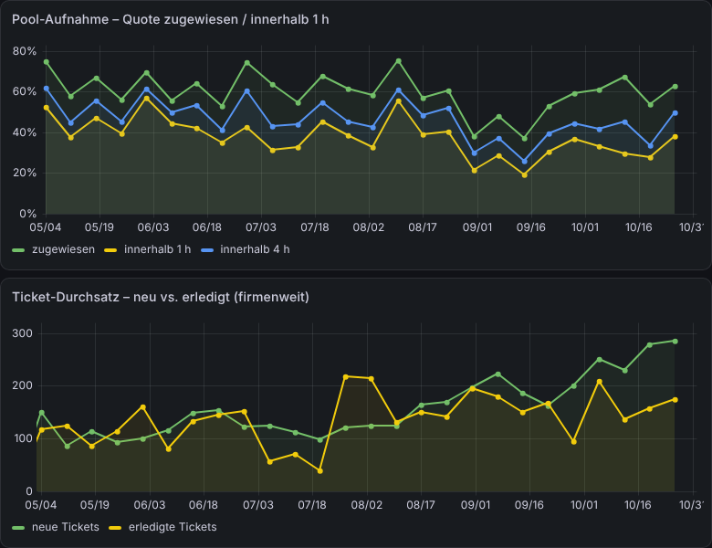

Zahlen sichtbar machen
Sie wissen jeden Morgen, wo Sie stehen.
Keine Monatsauswertung, die kommt, wenn es zu spät ist. Sie sehen die Zahlen von heute früh und können reagieren, solange es noch etwas bringt.

Unser eigenes Dashboard: Wie schnell Tickets angenommen und erledigt werden.
Ihr Montagmorgen
Alle schauen auf dieselben Zahlen.
- Keine Diskussion mehr, welche Excel die richtige ist
- Wenige Kennzahlen, die wirklich etwas auslösen
- Jede Zahl lässt sich bis zur Quelle zurückverfolgen
- Aktualisiert sich von allein, jeden Morgen
So machen wir das: Daten aus Warenwirtschaft, Shop, Buchhaltung oder Ticketsystem, bereinigt und täglich abgeholt. Angezeigt dort, wo Sie entscheiden.
Die Daten wandern. Sie entscheiden.
Jede Nacht und jeden Morgen holt ein Flow die Werte, prüft sie und legt sie ins Dashboard. Türkis ist die Maschine. Lila sind Sie.
So sieht das bei unseren Kunden aus.
Zwei Beispiele aus der Praxis. Die Zahlen unten sind Beispielwerte.
Getränkehersteller
Absatz je Sorte und Händler, jeden Morgen
Vorher monatliche Excel-Exporte. Heute sieht der Vertrieb jeden Morgen, welche Sorten wo laufen und wo nachgefasst werden muss.
Keramik-Fachhandel, Import & Export
Umsatz, Lager und Aufträge auf einen Blick
Geschäftsführung und Einkauf schauen auf dieselbe Wahrheit, direkt aus der Warenwirtschaft.
Grundsatz 1
Jede Zahl hat eine Quelle.
Ein Klick zeigt, woher der Wert kommt und wann er abgeholt wurde.
Grundsatz 2
Weniger ist mehr.
Fünf Kennzahlen, auf die jemand reagiert, statt fünfzig, die keiner liest.
Grundsatz 3
Fertig heißt: im Einsatz.
Das Dashboard ist fertig, wenn es im Montagsmeeting auf dem Bildschirm ist.
Taktcheck
15 Minuten, die sich lohnen.
Nach unserem Gespräch wissen Sie, wo Sie Zeit verlieren, was sich automatisieren lässt und was es ungefähr kostet. Oder ich sage Ihnen ehrlich, dass es sich nicht lohnt.
- kostenlos, per Video
- ohne Vorbereitung
- kein Verkaufsgespräch
- mit kurzer Notiz danach